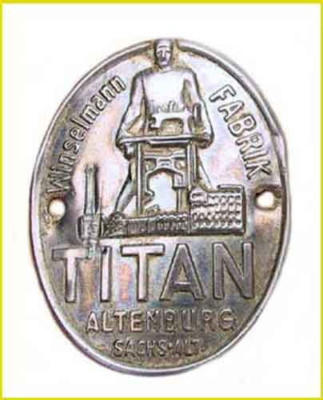

THE NEEDLEBAR
Catalogue of German Makers' Logos
Gustav Winselmann GmbH
Altenburg, Sachsen (Saxony)

Picture courtesy of Ursel Niggemann
c.1890 -1900
Picture courtesy of Mae Lopezc.1900
c.1900 - 10

© Alan Quinn 2000, 2004. All Rights Reserved
This page may not be reproduced or distributed in part or in whole without the prior written permission of the relevant copyright owner